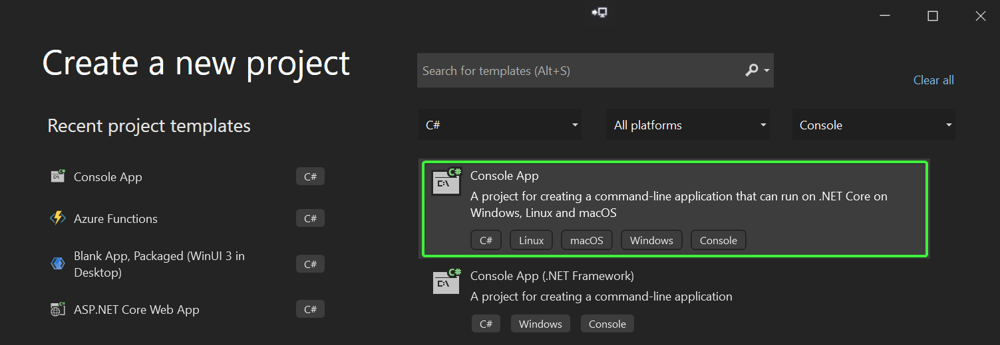
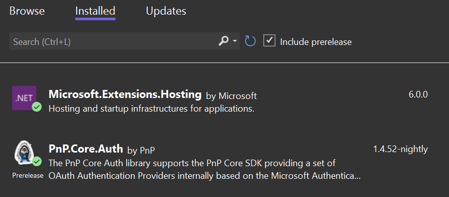

Minimal PnP Core SDK sample
PnP Core SDK works great in .NET console applications and this tutorial will walk you through the needed steps to create a minimal .NET console application.
Pre-requisites
Before you start this tutorial your development environment needs to be correctly setup and you do need to have a Microsoft 365 tenant available. If you don't have one, you can get a Microsoft 365 developer subscription when you join the Microsoft 365 Developer Program. See the Microsoft 365 Developer Program documentation for step-by-step instructions about how to join the Microsoft 365 Developer Program and sign up and configure your subscription.
As development environment this tutorial uses Visual Studio, you can either use the free community edition or subscription based professional or enterprise editions. See the Microsoft Visual Studio site to learn more about Visual Studio and how to install and use it.
Tutorial source code
If you follow this tutorial you end up with a working console application that uses PnP Core SDK. This same tutorial is also available as a sample containing the source code and brief setup instructions.
Create and configure the Entra ID application
PnP Core SDK requires an Entra ID application to authenticate to SharePoint:
- Navigate to https://entra.microsoft.com/
- Click on Entra ID, followed by navigating to App registrations
- Add a new application via the New registration link
- Give your application a name, e.g. PnPCoreSDKConsoleDemo and add http://localhost as redirect URI. Clicking on Register will create the application and open it
- Take note of the Application (client) ID value, you'll need it in the next step
- Click on API permissions and add these delegated permissions
- Microsoft Graph -> Sites.Manage.All
- SharePoint -> AllSites.Manage
- Consent the application permissions by clicking on Grant admin consent
Create the console application
Open up Visual Studio and choose the Create a new project option, select Console in the project types dropdown, pick c# in the languages dropdown and then choose Console App and click Next.

Enter a Project name and Location and click on Create. In the Additional information dialog choose .NET 10.0 (Long-term support) and click on Create.
Right click the project, choose Manage Nuget Packages..., ensure Include prerelease is checked, click on the Browse tab and enter PnP.Core in the search box. Select PnP.Core.Auth and click on Install. A Preview Changes dialog appears, click OK to continue. In the License Acceptance dialog click I Accept. Now repeat the same process for the Microsoft.Extensions.Hosting package. Clicking on the Installed tab should then show this:

Now continue with opening Program.cs and completely replace the code with below snippet:
using Microsoft.Extensions.DependencyInjection;
using Microsoft.Extensions.Hosting;
using PnP.Core.Auth;
using PnP.Core.Services;
string clientId = "c6b15c83-d569-4514-b4af-d433110123de";
string siteUrl = "https://bertonline.sharepoint.com/sites/prov-1";
// Creates and configures the host
var host = Host.CreateDefaultBuilder()
.ConfigureServices((context, services) =>
{
// Add PnP Core SDK
services.AddPnPCore(options =>
{
// Configure the interactive authentication provider as default
options.DefaultAuthenticationProvider = new InteractiveAuthenticationProvider()
{
ClientId = clientId,
RedirectUri = new Uri("http://localhost")
};
});
})
.UseConsoleLifetime()
.Build();
// Start the host
await host.StartAsync();
using (var scope = host.Services.CreateScope())
{
// Ask an IPnPContextFactory from the host
var pnpContextFactory = scope.ServiceProvider.GetRequiredService<IPnPContextFactory>();
// Create a PnPContext
using (var context = await pnpContextFactory.CreateAsync(new Uri(siteUrl)))
{
// Load the Title property of the site's root web
await context.Web.LoadAsync(p => p.Title);
Console.WriteLine($"The title of the web is {context.Web.Title}");
}
}
Configure the console application
Before the console application can be tested there are two variables that have to be set:
- Update
clientIdto match the client id of the Entra ID application you've created previously - Set
siteUrlto a site in your tenant
Test the console application
Press F5 to launch the application. A new browser window/tab will open asking you to authenticate with your Microsoft 365 account. Once you've done that the application will get the title of the site and display it.